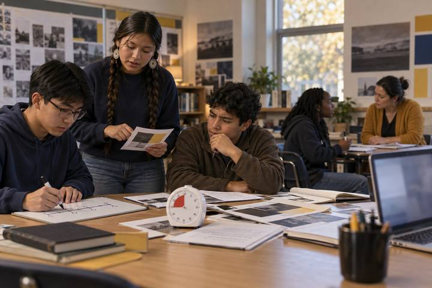
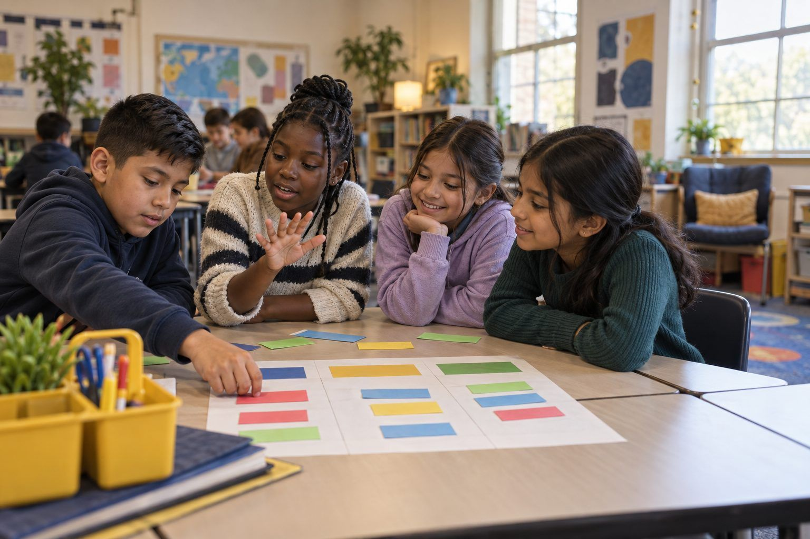

Student learningfor Grades 9–12
Deepfake Election Desk
Student newsroom teams race a deadline to decide which election-week tips are real, which are synthetic, and which they simply can't confirm yet.

All activities Student learning
Students sort mock posts, videos, and headlines into ads, information, and clickbait, hunt for persuasion tricks, and then create an honest, clearly labeled ad of their own.
Kids see ads everywhere, and many don't look like ads: a favorite gamer's "honest review," a sponsored search result, a cartoon inside a free game, a shocking headline built to get a click. In this lesson teams sort fourteen mock media items into Ad (wants you to buy), Info (wants you to know), and Clickbait (wants you to click), using a Persuasion Detective checklist. Then pairs flip roles and become media makers, creating an honest ad for a made-up product, labeled so no one is fooled. Along the way they see that AI can write persuasive text in seconds, which makes spotting persuasion a skill everyone needs.
Hook
Read aloud, with a big smile: "Hey friends! I just tried CloudCrunch cereal and it's honestly the best breakfast ever. It gives you SO much energy. Everybody at my school is eating it!" Ask: "Would you try CloudCrunch?" Then reveal the tiny line at the bottom: #ad · Paid partnership with CloudCrunch. Ask: "Does that change what you think? Why?"
Facilitator noteCloudCrunch is a made-up brand. Many students will say the review now feels less trustworthy. Ask why being paid might change what someone says.
Model
Write three questions on the board: Who made this? What do they want me to do: buy, know, or click? What clues tell me? Walk through Handout B, the Persuasion Detective checklist, giving a quick example of each technique. Then model one strip from Handout A: "'You WON'T BELIEVE what this cat did next!!!' Who made it? I don't know. What do they want? A click. Clues: ALL CAPS, three exclamation points, a mystery with no answer. Clickbait."
Facilitator noteClarify that ads aren't bad. People make and sell things. The problem is when you can't tell something is an ad.
Practice
Teams sort the 14 strips onto their mat, using Handout B to check clues. The team must agree on each strip, and anyone can say "Prove it" to ask for the clue. After 8 minutes, run a fast corner check: read five strips aloud and have one member of each team walk to the corner their team chose and name the clue.
Facilitator noteStrips 12 and 13 are designed to split the room: they are ads that don't say "ad." Push teams to find the clue (a promo code, a product pitch inside an answer).
Debrief
Ask: "Which strips were hardest? What made them sneaky?" Focus on the gamer's promo code (a clue he may be paid, even without #ad), the homework app's answer that ends with a product pitch, and the sponsored search result that sits at the top. Ask: "How is an ad hiding inside a helpful answer different from a label that says 'Sponsored'?" Then ask: "If a computer can write a persuasive ad in five seconds, what does that mean for us as readers?"
Facilitator noteIf you do the AI demo, run it here. Students hunt for persuasion techniques in the AI-written ad using Handout B.
Create
Pairs complete Handout C for a made-up product (Pencil Pal, the eraser that never smudges; or a product they invent). They design an honest ad that uses at most two persuasion techniques, includes a clear "AD" label, and makes no promises that aren't true. Then they write a short info version about the same product: just the facts. Pairs swap with another pair, who checks it using Handout B and says which techniques they spotted.
Facilitator noteThis is S5.2 creativity with limits: students must persuade honestly. Look for labels and facts they could actually back up.
Reflect
On the back of Handout C, students finish: "The next time I see a video or post about a product, I will ask ___." and "The persuasion trick I'll watch out for most is ___ because ___."
Facilitator noteStrong answers name a specific question ("Is this person being paid?") rather than "is it real?"
The sort, checklist, and ad creation all run on paper. The corner check adds movement. For the AI part without a screen, read aloud the idea that computers can now write ads in seconds and have students write a 30-second ad themselves, timing it, to feel how fast persuasive text can be produced.
During the Debrief, project a district-approved AI chatbot and type as the class watches: "Write a short, exciting ad for kids for a made-up eraser called Pencil Pal." Students use Handout B to find the persuasion techniques in the result and check whether it made any promises that couldn't be true. You can also show screenshots, captured in advance, of a kid-safe search results page with items labeled "Sponsored." Students can build their honest ad in a slide or drawing tool the class already uses. Students under 13 never use their own AI accounts; the teacher drives the chatbot.
Does it need a screen? The sort works fully on paper. The projected AI demo adds evidence paper can't: students watch a tool produce a slick, persuasive ad in seconds and then pick it apart with the checklist, which shows why spotting persuasion matters more, not less, with AI in the world.
What you should be able to see or collect if it worked.
Students sort mock media by the creator's purpose and name the persuasion clue, core ELAR author's-purpose work that also builds the grades 3–5 media-spin strand of digital citizenship.
Students go on an "ad hunt" at home with a family member, finding one ad that says it's an ad and one that doesn't, and noting the clue for each on the back of Handout C. Next lesson, Credit Where It's Due builds on being an honest media maker.